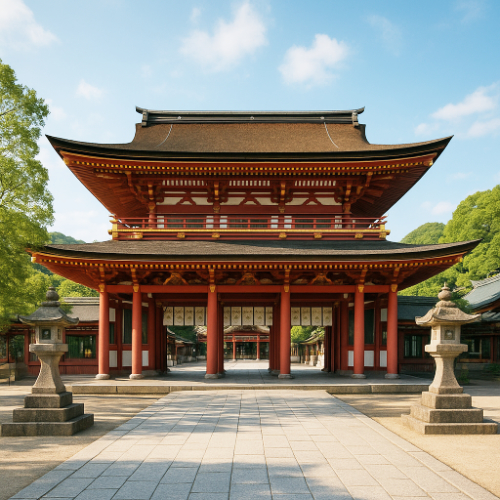

Dazaifu Tenmangu Shrine – The Spiritual Heart of Fukuoka

Dazaifu Tenmangu Shrine (太宰府天満宮) is a major Shinto shrine located in the town of Dazaifu, just outside Fukuoka. Dedicated to Sugawara no Michizane, the god of learning, this historic shrine attracts students and scholars seeking blessings for academic success. With its tranquil atmosphere, historical significance, and beautiful grounds, it’s a must-visit spiritual site in the Fukuoka area.
The Significance of Dazaifu Tenmangu
Dazaifu Tenmangu Shrine is not only a religious site but also a symbol of academic achievement in Japan. Visitors come here to pray for success in exams and to honor the spirit of Michizane, a scholar who became a deity of education.
Beautiful Surroundings and Historic Architecture
The shrine is surrounded by stunning gardens and ponds, offering peaceful surroundings perfect for reflection. The architecture, with its bright vermillion color, is a fine example of traditional Japanese shrine design.
How to Get to Dazaifu Tenmangu Shrine
- 🌸 From Hakata Station: Take the Nishitetsu Line to Dazaifu Station (approx. 30 minutes)
- 🌸 Walking distance from Dazaifu Station to the shrine entrance
- 🌸 Opening hours: Open year-round, especially busy during exam season in spring and winter
- 🌸 Best photo spots: The large torii gate, beautiful gardens, and shrine buildings
Why Dazaifu Tenmangu Shrine is a Must-Visit
Whether you’re seeking spiritual insight or simply enjoying the beauty of the gardens, Dazaifu Tenmangu Shrine offers a serene and meaningful experience in Fukuoka. Its cultural importance and tranquil atmosphere make it a highlight of any visit to the area.
Tags: Dazaifu Tenmangu Shrine, Fukuoka attractions, Japan shrines, Sugawara no Michizane, learning god shrine, Dazaifu history
Planning to visit Dazaifu Tenmangu Shrine?
To get the most immersive and insightful experience, we recommend booking a certified local private guide from our team. All our guides are licensed professionals officially recognized by the Japanese government, offering personalized tours tailored to your interests. Please contact your selected guide in advance to confirm availability and get expert assistance for your trip.